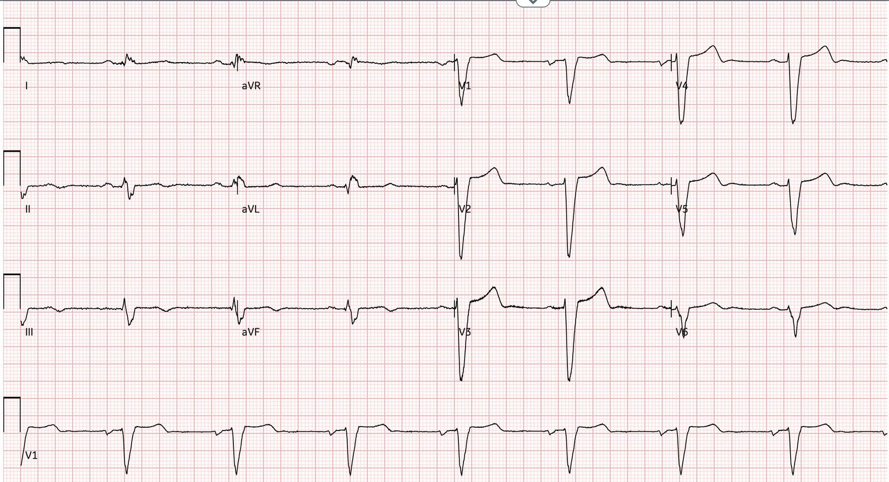
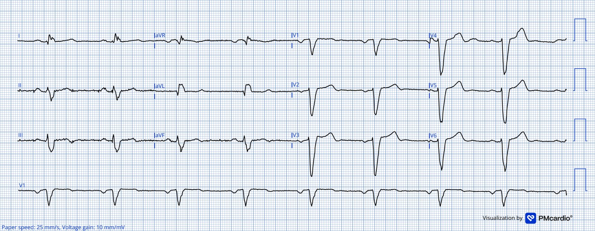
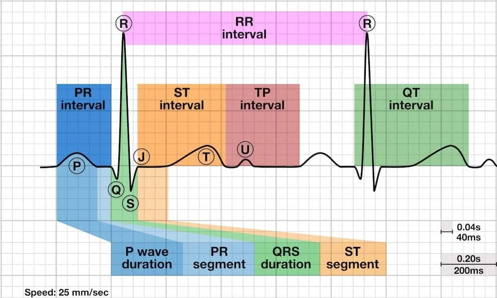
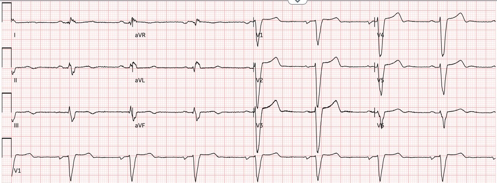
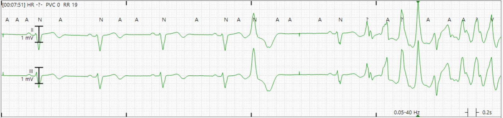
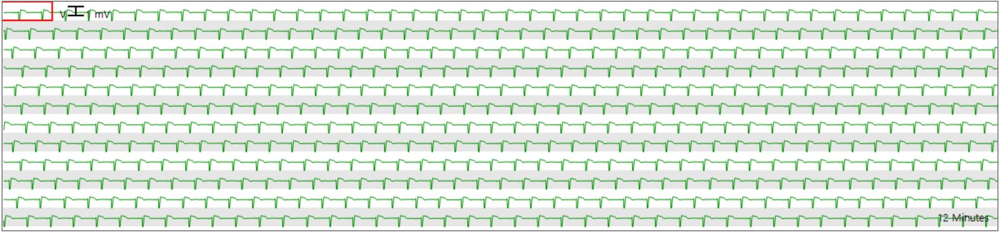
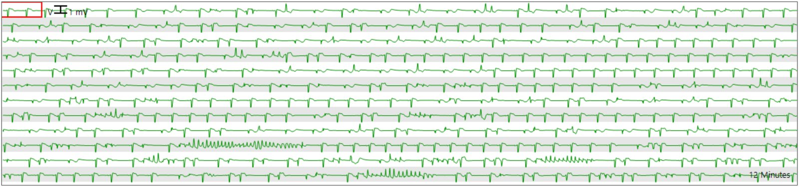
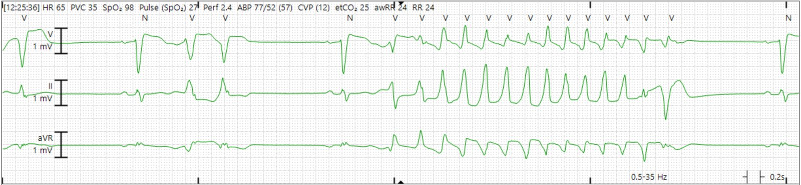
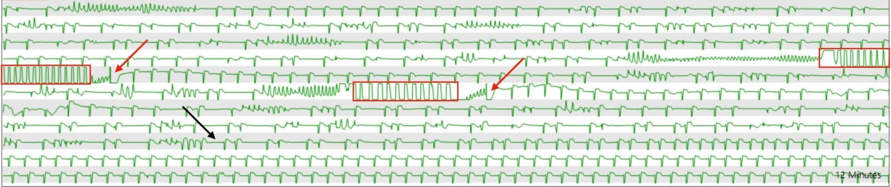

25/02/2026 — Dofetilide (và ibutilide – thuốc chống loạn nhịp nhóm III). Nguy cơ là gì? Biểu hiện trên điện tâm đồ ra sao? Xử trí biến chứng thế nào?
Bản dịch tiếng Việt của bài "Dofetilde (and ibutilide -Class III antidysrhythmics). What is the risk? How does it show on the ECG? What to do about the complication?" – Dr. Smith’s ECG Blog. Giữ nguyên toàn bộ 9 hình ảnh của bản gốc.


Tác giả: Willy Frick
TRÌNH BÀY CA BỆNH
Một phụ nữ trung niên bị suy tim phân suất tống máu giảm (HFrEF) (EF 25-30%) và rung nhĩ dai dẳng (persistent atrial fibrillation) được nhập viện theo chương trình để nạp liều dofetilide. Dofetilide là thuốc chống loạn nhịp nhóm 3, hữu ích ở những bệnh nhân theo chiến lược kiểm soát nhịp (rhythm control) đối với rung nhĩ. Chiến lược kiểm soát nhịp là nỗ lực nhằm khôi phục nhịp xoang. Dofetilide bắt buộc phải được khởi trị khi bệnh nhân nằm viện do nguy cơ đã biết gây xoắn đỉnh (Torsades de Pointes, TdP). Nguy cơ TdP đặc biệt tăng cao khi phân suất tống máu thấp, như trong ca này. Điện tâm đồ nền của bệnh nhân là bản ghi đầu tiên dưới đây.
Smith Bình luận (đặc biệt hữu ích cho bác sĩ cấp cứu): Dofetilide cùng nhóm thuốc với ibutilide, thuốc có thể dùng để hỗ trợ sốc điện chuyển nhịp rung nhĩ tại khoa cấp cứu (xem phần bàn luận chi tiết và quan trọng ở cuối bài). Dofetilide và ibutilide là thuốc chống loạn nhịp nhóm III. Chúng hoạt động như thuốc chẹn kênh kali, chủ yếu ức chế thành phần nhanh của dòng kali chỉnh lưu chậm (rapid component of the delayed rectifier potassium current). Đây là dòng làm tái cực cơ tim. Nếu làm chậm dòng này, bạn làm chậm tái cực, do đó kéo dài tái cực và vì vậy kéo dài khoảng QT. Vì thế biến chứng chính của dofetilide và ibutilide là QT kéo dài và nguy cơ xoắn đỉnh (Torsades de Pointes).
Hình 1: Điện tâm đồ nền


Ở đây tần số tim là 55.
Máy đo QT là 526 ms, có vẻ chính xác và thuộc loại dài. Tuy nhiên, có thể nới lỏng hơn một chút ở bệnh nhân có QRS rộng. Nói một cách chặt chẽ, tờ hướng dẫn sử dụng thuốc không khuyến cáo khởi trị dofetilide ở bệnh nhân có QRS rộng và QTc (hoặc QT chưa hiệu chỉnh khi tần số tim dưới 60). Tuy nhiên, thực hành ở điểm này còn khác nhau và nhiều bác sĩ điện sinh lý tự cân nhắc dựa trên độ rộng tuyệt đối của QRS.
Smith: lưu ý còn có nhịp chậm xoang. Điều này làm khả năng xảy ra TdP cao hơn đáng kể vì nó tạo điều kiện cho thời kỳ trơ dài hơn và khả năng xuất hiện PVC cao hơn. Hiện tượng này còn được gọi là “phụ thuộc khoảng ngưng” (Pause dependence) vì bất kỳ khoảng ngưng nào cũng làm tăng khả năng xảy ra TdP.
Vì sao lại như vậy?
Nguy cơ TdP tỷ lệ thuận với QTc. TdP xảy ra khi một PVC khử cực tâm thất lúc tâm thất vẫn còn trơ một phần. Đây được gọi là “hiện tượng R trên T” (R on T phenomenon). PVC là một sóng R, còn sóng T là giai đoạn dễ tổn thương (vulnerable period) khi tâm thất trơ một phần. Sẽ hữu ích nếu xem lại hình này từ Life In The Fast Lane:
Hình 2: Các khoảng trên điện tâm đồ


Ở đây, chúng ta thấy rõ rằng:
Khoảng QT = thời gian QRS + khoảng ST
Do đó, bất cứ điều gì kéo dài thời gian QRS (ví dụ chậm dẫn truyền trong thất như trong trường hợp bệnh nhân của chúng tôi) cũng tất yếu kéo dài khoảng QT. Nhưng thực ra chỉ một phần của khoảng ST mới tạo thành giai đoạn dễ tổn thương đối với hiện tượng R trên T. Trong lúc QRS diễn ra, tâm thất đã đang khử cực. Nếu một phần tâm thất bị kích thích RẤT sớm ngay sau QRS, tâm thất sẽ ở trạng thái trơ tuyệt đối và không có gì xảy ra. Nhưng nếu kích thích xảy ra muộn hơn một chút (đâu đó trong khoảng từ giữa đến cuối sóng T), tâm thất chỉ trơ một phần và có thể khử cực lại, dẫn tới TdP.
Smith: đây là lý do một số tác giả cho rằng cách tốt nhất để đo QT kéo dài khi có blốc nhánh trái (LBBB) là dùng thời gian từ đỉnh T đến cuối T (T-peak to T-end, TpTe). Đó là khoảng có nguy cơ cao nhất và cũng là khoảng bị kéo dài trong QT dài. TpTe kéo dài là trong khoảng 85-100ms. Xem bài báo của chúng tôi: Dodd KW, Elm KD, Dodd EM, Smith SW. Among patients with left bundle branch block, T-wave peak to T-wave end time is prolonged in the presence of acute coronary occlusion. Int J Cardiol [Internet] 2017;236:1–4. Truy cập tại: http://dx.doi.org/10.1016/j.ijcard.2017.01.064
Một số tác giả khuyến nghị dùng công thức hiệu chỉnh Rautaharju khi QRS rộng.
——QTcR = QT – 0.185(RR – 1) + k, trong đó k = +0.006 với nam và 0 với nữ.
Những tác giả khác khuyến nghị dùng khoảng JT và khoảng JT hiệu chỉnh (JTc).
——(JTc = QTc – thời gian QRS [QRSd])
Quay lại ca bệnh:
Vì hết sức thận trọng, nhóm điều trị đã chọn khởi đầu cho bà liều 250 mcg. (Liều khởi đầu thường dùng cho bệnh nhân có chức năng thận bình thường là 500 mcg.) Điện tâm đồ 2 giờ sau liều này được trình bày dưới đây:
Hình 3: Điện tâm đồ 2 giờ sau liều dofetilide đầu tiên


Tần số tim chậm đến mức nguy hiểm, 48 nhịp/phút. QT đã tăng lên khoảng 560 ms, dài hơn đáng kể so với mức 526 ms trước đó.
Nếu QTc (hoặc QT nếu HR < 60) tăng trên 550 ms ở bệnh nhân có QRS rộng, cần giảm liều 50%. QTc ở đây đo được 554 ms. Y lệnh được thay đổi để sáng hôm sau bệnh nhân nhận liều 125 mcg.
Tuy nhiên, vào tối hôm đó, theo dõi từ xa (telemetry) cho thấy như sau:
Hình 4: Theo dõi tim từ xa (telemetry)


Bệnh nhân xuất hiện hiện tượng R trên T dẫn tới TdP, rồi nhanh chóng thoái hóa thành rung thất (ngay sau dải nhịp này). Vì bệnh nhân đang được theo dõi tim từ xa, nhóm điều dưỡng đã kích hoạt báo động code blue và bắt đầu hồi sinh tim nâng cao (ACLS). Bệnh nhân nhanh chóng được đặt nội khí quản, khử rung và chuyển vào ICU. Bà không tái phát rối loạn nhịp trong suốt phần còn lại của đêm, và dĩ nhiên dofetilide đã được ngừng.
Vào giữa ngày hôm sau ( = ngày nằm viện thứ 2), khi vẫn còn đặt nội khí quản và an thần — bà có nhịp chậm xoang lúc nghỉ ở mức khoảng trên 40 một chút, ban đầu không có biến cố gì. Bạn có thể thấy trên dải nhịp nén này, thể hiện 12 phút theo dõi từ xa, rằng bà không hề có PVC nào.
Hình 5: Nhịp chậm xoang trên theo dõi từ xa


Tuy nhiên, bà đột ngột bắt đầu xuất hiện các PVC và các loạt TdP tự kết thúc.
Hình 6: Các PVC và TdP tái phát


Hình 7: Phóng to một loạt TdP ngắn


Nhóm điều trị nhanh chóng cho bệnh nhân 4 g magnesi tĩnh mạch, nhưng các PVC và TdP vẫn tiếp diễn.
Hãy dành một chút thời gian và tự hỏi, bạn sẽ làm gì tiếp theo?
Trả lời: Tăng tần số tim. Tạo nhịp vượt tần số (overdrive pacing) là cách rất hiệu quả để ức chế TdP. Cơ chế lợi ích chính xác chưa hoàn toàn rõ, nhưng có lẽ là do tác động kép của nhịp nhanh: 1) Rút ngắn QT, và 2) Giảm sự phân tán tái cực (repolarization dispersion) (tức là tính không đồng nhất theo vùng về trạng thái tái cực giữa các vùng khác nhau của tim tại một thời điểm nhất định trong chu chuyển tim).
Làm thế nào để tăng tần số tim? Hai kỹ thuật thường dùng là 1. máy tạo nhịp tạm thời qua đường tĩnh mạch hoặc 2. truyền liên tục thuốc chủ vận beta-1. Trước đây, thuốc chủ vận beta-1 được dùng phổ biến nhất là isoproterenol, nhưng nay thuốc này đắt đến mức dobutamine được dùng phổ biến hơn. Tuy nhiên, cả hai phương pháp này thường mất 20 phút trở lên mới bắt đầu được. Hai mươi phút là quãng thời gian dài khi bạn đứng cạnh giường nhìn những loạt TdP tái phát trên màn hình monitor.
Chúng ta có thể làm gì cho bệnh nhân ngay lúc này bằng những gì có trong xe cấp cứu (crash cart)? Atropine! Atropine luôn có trong xe cấp cứu, và nó có thể làm tăng tần số tim ngay lập tức trong khi chờ khoa dược pha isoproterenol. Điều này không được giảng dạy rộng rãi như một biện pháp điều trị TdP, nhưng thường cực kỳ hiệu quả. Isoproterenol chẳng có gì thần kỳ cả, chỉ đơn giản là một thuốc tĩnh mạch có thể chỉnh liều, dùng để duy trì tần số tim cao tương đối dễ dàng.
Quay lại ca bệnh:
Bệnh nhân được tiêm atropine 1 mg tĩnh mạch lấy từ xe cấp cứu và hãy xem điều gì đã xảy ra:
Hình 8: Theo dõi từ xa trước và sau khi dùng atropine


Xem qua đoạn này, thể hiện 11 phút (tôi đã cắt bỏ dòng trên cùng để tập trung vào các phần quan trọng), chúng ta thấy các loạt TdP tái phát. Các hình chữ nhật màu đỏ đánh dấu nhiễu do ép tim trong các cơn TdP bền bỉ. Các đầu mũi tên màu đỏ chỉ vào nhiễu do khử rung ngoài lồng ngực. Đầu mũi tên màu đen chỉ thời điểm tiêm atropine.
Sau đó bệnh nhân được bắt đầu truyền isoproterenol, chỉnh liều để đạt tần số tim mục tiêu 80 nhịp/phút. Thuốc được giảm dần và ngừng trong 48 giờ khi dofetilide đã được thải trừ hết. Bệnh nhân không còn tái phát TdP.
Những điểm cần học:
- Ngoài magnesi tĩnh mạch, hãy nghĩ tới atropine khi điều trị xoắn đỉnh (Torsades de Pointes) nếu có kèm nhịp chậm.
- QTc khó diễn giải hơn ở bệnh nhân có QRS rộng.
VT đa dạng kèm QT kéo dài (xoắn đỉnh – Torsades de Pointes)
•Thường tự kết thúc, có thể tiến triển thành rung thất
•“Phụ thuộc khoảng ngưng” (nặng hơn khi nhịp chậm)
•Điều trị: điều chỉnh điện giải (K, Mg)
•Có nguy cơ xoắn đỉnh: Mg, 2g trong 15 phút
•Đang có VT:
–Sốc điện chuyển nhịp
–Mg, 2g trong 30-60 giây, tối đa 6g
•đưa K huyết thanh lên 4.0 đến 4.5
•Lidocaine có thể ngăn PVC, không kéo dài QT như các thuốc khác
•Tạo nhịp vượt tần số (100-140): tần số tạo nhịp thấp nhất ngăn được PVC
•Isoproterenol (thuốc chủ vận beta 1 và 2!), nếu không thể bắt đầu tạo nhịp ngay.
•Dobutamine là thuốc thay thế và hiện nay rẻ hơn.
•Ngăn xoắn đỉnh do LQTS phụ thuộc khoảng ngưng bằng cách tăng HR
•Dùng nếu xoắn đỉnh có vẻ phụ thuộc khoảng ngưng
–Nếu phụ thuộc khoảng ngưng, thì hầu như luôn là QT dài mắc phải (do thuốc hoặc điện giải)
–Có nhịp chậm nền trước cơn nhịp nhanh (“phụ thuộc khoảng ngưng”)
•Cảnh giác VT đa dạng do catecholamine (CPVT)
–Loại VT đa dạng này nặng lên khi dùng thuốc chủ vận beta-1!)
–Nó cũng nặng lên khi sốc điện chuyển nhịp (do tăng vọt catecholamine)
–Sốc điện kèm chẹn beta
–Điện tâm đồ không có QT dài
= = =
Dùng ibutilide để hỗ trợ sốc điện chuyển nhịp rung nhĩ tại khoa cấp cứu
Ibutilide có thể dùng để hỗ trợ sốc điện chuyển nhịp ở những bệnh nhân mà chỉ dùng sốc điện đơn thuần không hiệu quả. Xem bài báo này (không phải dùng tại khoa cấp cứu), được mô tả chi tiết dưới đây: Facilitating Transthoracic Cardioversion of Atrial Fibrillation with Ibutilide Pretreatment
Và đây là mô tả về việc dùng ibutilide tại khoa cấp cứu (họ ít hạn chế hơn nhiều so với nghiên cứu gốc, được mô tả dưới đây, với ít biến chứng): Ibutilide Effectiveness and Safety in the Cardioversion of Atrial Fibrillation and Flutter in the Community Emergency Department
Facilitating Transthoracic Cardioversion of Atrial Fibrillation with Ibutilide Pretreatment. Oral H và cs., New Engl J Med ngày 17 tháng Sáu năm 1999; 340(24):1849-54.
Tóm tắt
Bối cảnh. Không phải lúc nào rung nhĩ cũng chuyển được về nhịp xoang bằng sốc điện chuyển nhịp qua thành ngực. Chúng tôi khảo sát tác dụng của ibutilide, một thuốc chống loạn nhịp nhóm III, lên mức năng lượng cần thiết để khử rung nhĩ và đánh giá giá trị của thuốc này trong việc hỗ trợ chuyển nhịp ở bệnh nhân rung nhĩ kháng trị với sốc điện chuyển nhịp qua thành ngực thông thường.
Phương pháp. Một trăm bệnh nhân đã bị rung nhĩ trung bình (±SD) 117±201 ngày được phân ngẫu nhiên để sốc điện chuyển nhịp qua thành ngực có hoặc không có tiền điều trị bằng 1 mg ibutilide. Chúng tôi thiết kế một phác đồ tăng bậc, trong đó các cú sốc 50, 100, 200, 300 và 360 J được dùng để sốc điện chuyển nhịp qua thành ngực. Nếu sốc điện chuyển nhịp qua thành ngực không thành công ở bệnh nhân không được tiền điều trị bằng ibutilide, ibutilide sẽ được dùng và sốc điện chuyển nhịp qua thành ngực được thực hiện lại.
Kết quả. Chuyển về nhịp xoang xảy ra ở 36 trong 50 bệnh nhân không dùng ibutilide (72 phần trăm) và ở cả 50 bệnh nhân đã dùng ibutilide (100 phần trăm, P<0.001). Ở cả 14 bệnh nhân mà sốc điện chuyển nhịp qua thành ngực đơn thuần thất bại, nhịp xoang đã được khôi phục khi sốc điện lại sau khi dùng ibutilide. Tiền điều trị bằng ibutilide đi kèm với giảm năng lượng trung bình cần cho khử rung (166±80 J, so với 228±93 J khi không tiền điều trị; P<0.001). Nhịp nhanh thất đa dạng bền bỉ xảy ra ở 2 trong 64 bệnh nhân dùng ibutilide (3 phần trăm), cả hai đều có phân suất tống máu từ 0.20 trở xuống. Tỷ lệ không tái phát rung nhĩ sau sáu tháng theo dõi là tương tự nhau ở hai nhóm ngẫu nhiên.
Kết luận. Hiệu quả của sốc điện chuyển nhịp qua thành ngực trong việc chuyển rung nhĩ về nhịp xoang được tăng cường nhờ tiền điều trị bằng ibutilide. Tuy nhiên, nên tránh dùng thuốc này ở bệnh nhân có phân suất tống máu rất thấp. (N Engl J Med 1999;340:1849-54.) *
Nhận xét quan trọng:
Liều dùng là 1 mg tĩnh mạch trong 10 phút.
Họ đưa vào nghiên cứu những bệnh nhân bị rung nhĩ dưới 48 giờ
Họ loại trừ bệnh nhân rung nhĩ kéo dài hơn 48 giờ trừ khi chứng minh được bằng siêu âm tim qua thực quản (TE echo) là không có huyết khối nhĩ, HOẶC trừ khi đã cho họ dùng thuốc chống đông trước 3 tuần
Vì vậy, những bệnh nhân của chúng ta đã bị rung nhĩ < 48 giờ, hoặc đã đang dùng thuốc chống đông, thì áp dụng được
Họ loại trừ bất kỳ ai có QTc > 480ms vì ibutilide có thể gây xoắn đỉnh
Liều dùng là 1mg trong 10 phút
Ở 2 bệnh nhân bị xoắn đỉnh (cả hai đều có phân suất tống máu thấp, <20%), cả hai đều được kiểm soát dễ dàng.
Các tác giả khuyến nghị không dùng ibutilide cho chỉ định này ở bệnh nhân ổn định nếu EF < 30%. Tuy nhiên, đây vẫn là một lựa chọn ở bệnh nhân không ổn định.
Ibutilide làm tăng QTc đáng kể (432+/-37 trước so với 482+/-49 sau)
Mặc dù bài báo không bàn tới điểm này, tôi sẽ không cho bệnh nhân như vậy về nhà trừ khi QT đã được điều chỉnh về bình thường.
Cuối cùng, tôi luôn dùng sốc điện chuyển nhịp không kèm ibutilide trước. Như trong nghiên cứu này, tôi chỉ dùng ibutilide nếu sốc điện không hiệu quả.
======================================
BÌNH LUẬN CỦA TÔI, bởi KEN GRAUER, MD (25/2/2026):
Đánh giá nguy cơ tiềm tàng của TdP (xoắn đỉnh – Torsades de Pointes) luôn là thách thức — nhưng đặc biệt khó khi có QRS giãn rộng và nhịp chậm (cả hai dấu hiệu này đều có mặt trong ca hôm nay).
- Nhịp chậm làm khoảng R-R dài hơn. Vì khoảng R-R đứng trước một phức bộ QRS ảnh hưởng tới độ dài khoảng QT của phức bộ QRS đó — tần số tim chậm hơn làm tăng thời gian khoảng QT của các nhát tiếp theo (và do đó kéo dài giai đoạn “dễ tổn thương” tiếp theo). Chính vì lý do này mà khi chúng ta lo ngại về “nguy cơ” TdP — có lẽ không nên “hiệu chỉnh” khoảng QT khi tần số tim dưới 60/phút (vì tần số tim chậm tự nó đã làm tăng nguy cơ xoắn đỉnh).
- Vì vậy, tôi xin bổ sung vào Những điểm cần học của BS. Frick như sau: i) Mức độ nhịp chậm càng nặng có thể càng làm tăng đáng kể nguy cơ xoắn đỉnh; — và, ii) Các công thức hiệu chỉnh để ước tính QTc trở nên kém chính xác hơn khi tần số tim chậm (đến mức hiệu chỉnh ít đi, nếu có, đối với QT đo được có thể là cách tốt nhất để đánh giá “QTc” khi tần số tim dưới 60/phút).
= = =
Làm thế nào để ước tính QTc khi QRS rộng?
- Ca hôm nay của BS. Frick nhấn mạnh tầm quan trọng lâm sàng của việc ước tính QTc (trong ca này liên quan tới việc chỉnh liều Dofetilide).
- Chúng tôi đã thêm một đường dẫn nhanh tới công cụ tính QTc — trong Menu ở đầu mỗi trang của Dr. Smith’s ECG Blog (Hình 1). Công cụ tính này giúp ước tính QTc bằng các công thức được chấp nhận rộng rãi nhất cho cả phức bộ QRS bình thường và QRS kéo dài (Chỉ cần trượt công cụ tính sang trái để dùng ứng dụng khi QRS rộng).
= = =
Hình 1: Đường dẫn nhanh tới công cụ tính QTc trong Menu ở ĐẦU mỗi trang của Dr. Smith’s ECG Blog.

= = =
=